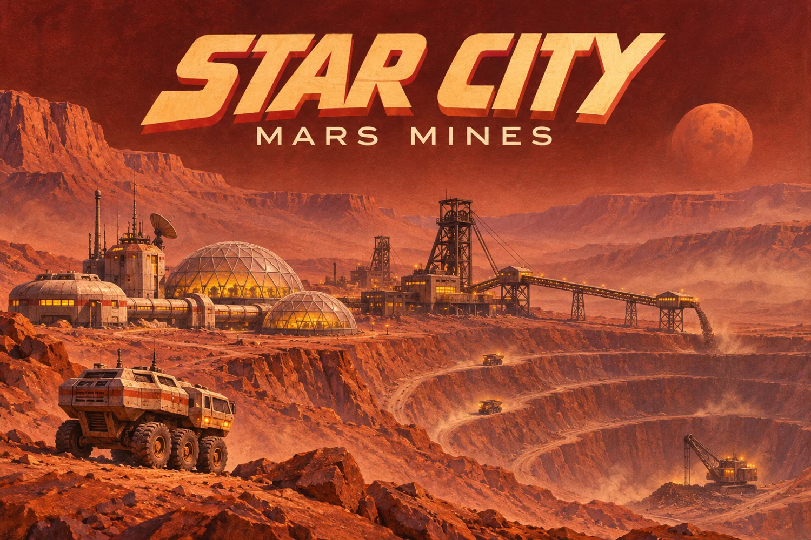

Star City • Valles Marineris, Mars • 2187
Your first shift on Mars
A dust storm has cut off contact with the mine. The colony is on emergency oxygen. Take command at the terminal.
CHAPTER 1 / CONTROL ROOM
Demo complete
You’ve reached the service airlock. The rest of the mission awaits in the full macOS game.
Buy the full game on itch.io